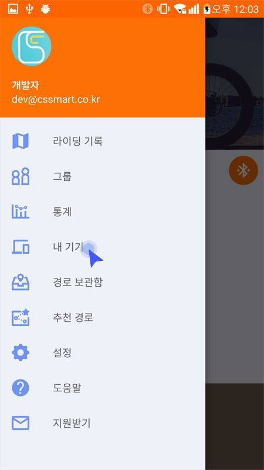
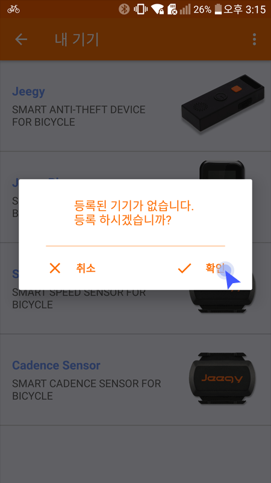
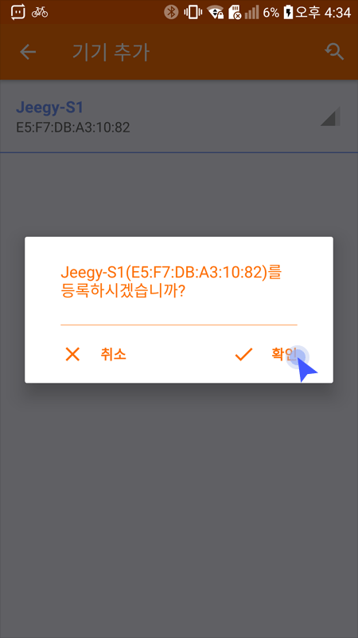
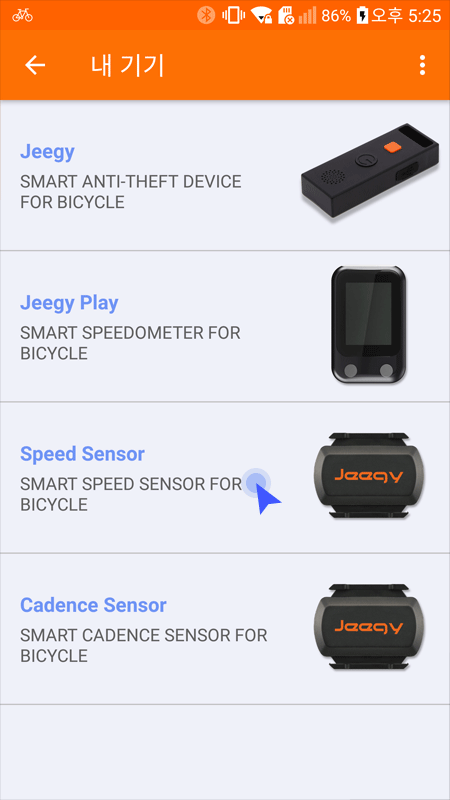
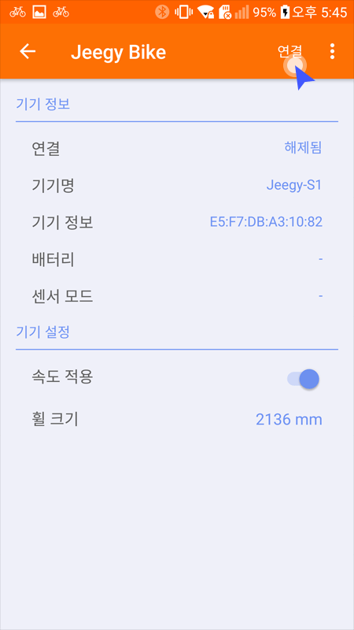
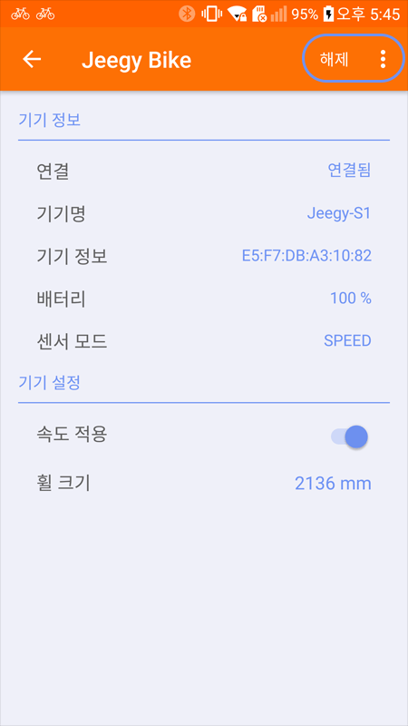
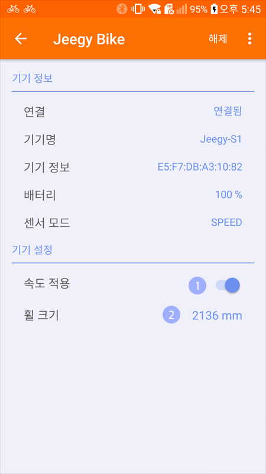

*등록 절차를 진행하기 전에 제품의 전원을 켜주시기 바랍니다.
메인 메뉴의 ‘내 기기'메뉴를 클릭합니다.
기기목록중 speed Sensor 나 cadence Sensor 중에서 사용하고자 하는 항목을 클릭합니다.
* 기기가 등록되어 있지 않으면 새로운 기기를 검색하고 등록되어 있으면 기기설정 화면으로 이동 합니다.
검색된 기기를 클릭하면 등록이 완료되고 자동으로 연결 됩니다.
* 검색된 기기가 없을때는 제품의 전원이 들어와 있는지 확인해 주시기 바랍니다.
* 기기가 다른휴대폰에 연결되어 있을때는 검색되지 않습니다.
* 기기가 여러개가 검색될 경우에는 가까운순으로 목록에 표시됩니다.
‘내기기' 메뉴를 클릭합니다.
기기 목록중 ‘Jeegy Speed’ 항목을 클릭합니다.

① 연결이 되어있지 않을때
- 연결 : 기기를 연결 합니다.

② 연결되어 있을때
- 해제 : 기기의 연결을 해제합니다.
- 기기 삭제 : 내 계정에서등록을 해제 합니다.
스피드 센서와 케이던스 센서를 번갈아 가며 사용하기 위해서는 반드시 각 센서의 설정화면에서 기가 삭제를 하신후 진행해주시기 바랍니다. 삭제가 안되었을경우에는 "이미 등록된 기기입니다 "라는 메시지가 뜨며 중복등록되지 않습니다
‘내 기기'메뉴를 클릭합니다.
기기 목록중 ‘Jeegy Speed’ 항목을 클릭합니다.
* 기기가 등록되어 있으면 설정화면으로 이동합니다.
① 속도 적용 : 활성화 되어 있으면 속도센서의 속도가 표시되며, 비활성화시에는 GPS의 속도가 표시됩니다. ② 휠 크기 : 자전거 휠의 크기를 입력합니다. * 크기가 다를 경우 속도가 다를 수 있습니다.
케이던스 센서는 별도의 설정항목이 없습니다.
스피드 센서가 적용되었다면 위와같이 속도계 아이콘이 표시됩니다. 케이던스 센서는 별도의 표시 항목이 없습니다. 트래킹시에 페달의 수치가 올라가는게 확인된다면 센서가 적용된 상태입니다.
① 속도센서가 앱에 연결되면 “SENSE”글자가 나타납니다. 연결이 끊기면 “SENSE”글자가 사라집니다.
② 케이던스센서가 연결되면 “SEN”글자가 나타납니다. 연결이 끊기면 “ SEN”글자가 사라집니다.
① 속도센서가 연결되면 “SE” 글자가 나타납니다. 연결이 끊어지면 “SE” 글자가 사라집니다.
이 화면에서는 케이던스는 표시되지 않습니다.
① 속도센서가 앱에 연결되면 “SENSE”글자가 나타납니다. 연결이 끊기면 “SENSE”글자가 사라집니다.
② 케이던스센서가 연결되면 “SEN”글자가 나타납니다. 연결이 끊기면 “ SEN”글자가 사라집니다.
① 센서는 연결이 끊긴 상태에서 약간의 시간이 흐르면 슬립상태가 됩니다. 따라서 다시 연결을 하려면 자전거 바퀴(스피드센서)나 페달(케이던스센서)을 움직여야 합니다.
② 그래도 연결이 되지 않는다면 수동으로 연결을 합니다. 수동으로 연결하는 방법은 매뉴얼을 참고합니다.
③ 수동으로 연결이 잘 되지 않는다면 스마트폰의 블루투스를 껐다 다시 켭니다. 그래도 연결이 되지 않으면 센서 디바이스를 앱에서 삭제하고 다시 등록합니다.
④ 케이던스 배터리를 점검해 봅니다. 1주일에 1번 3~4시간 라이딩 하는 것을 기준으로 6개월정도 사용이 가능하므로 배터리가 충분한지 점검합니다.
① 센서가 연결이 되었는지 확인합니다.
② 센서가 연결되었는데 케이던스 데이터가 올라오지 않는 경우 : 트래킹모드에서 자전거가 움직이고 있는 경우에만 스피드 센서가 동작을 합니다.
③ 스피드 센서의 배터리가 충분한지 점검합니다.